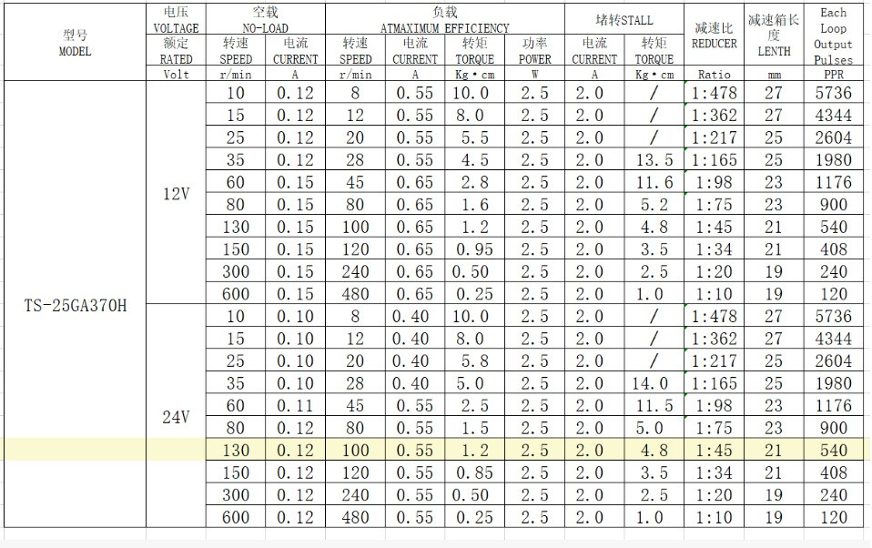
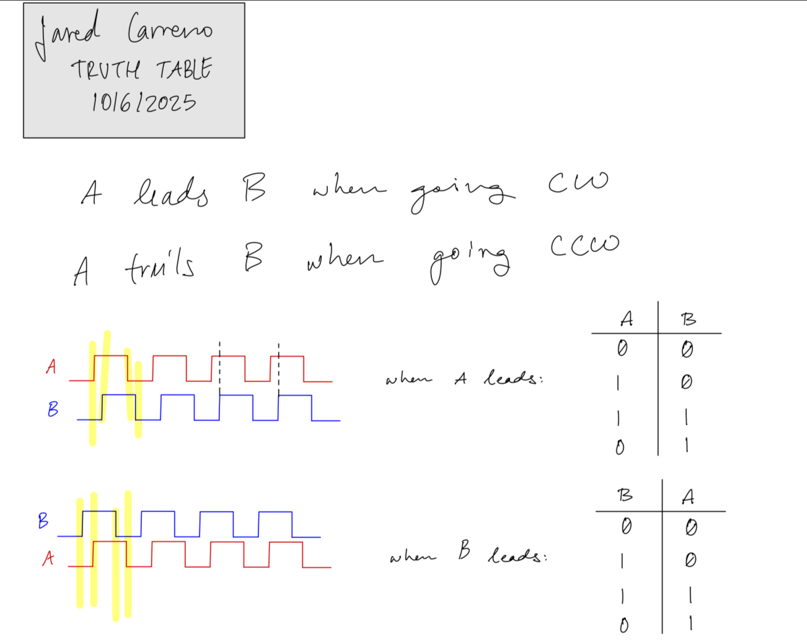
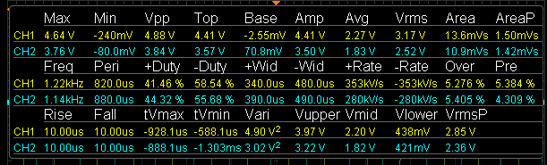
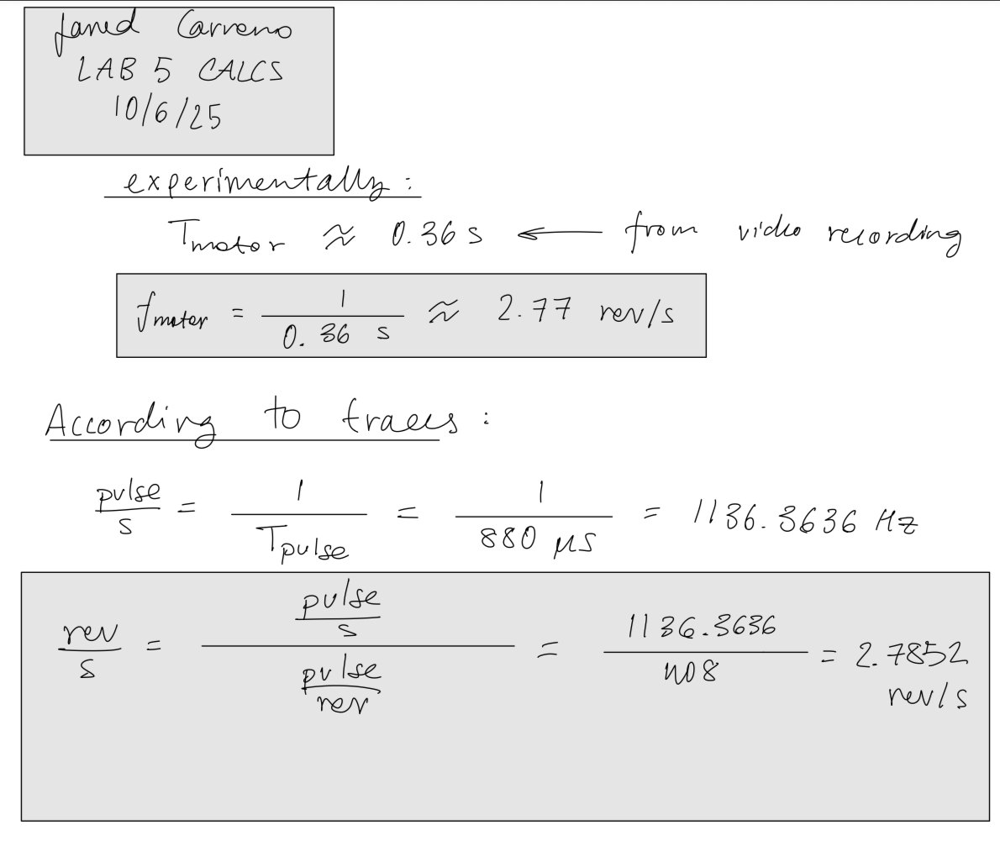
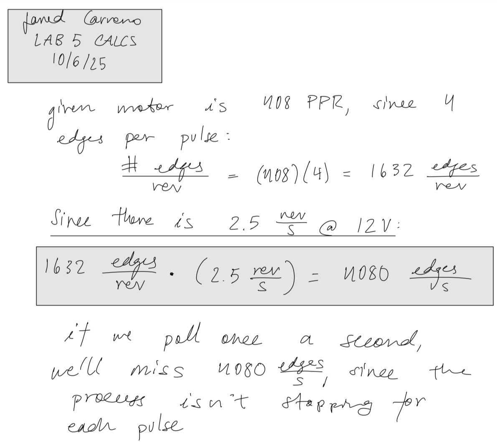
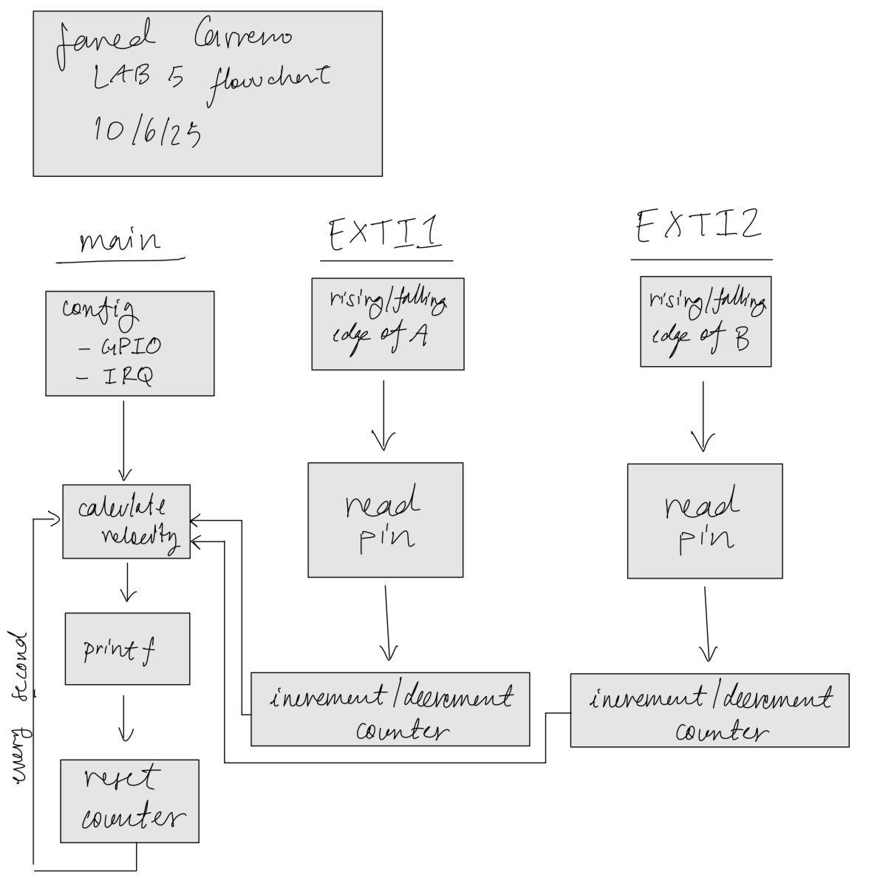
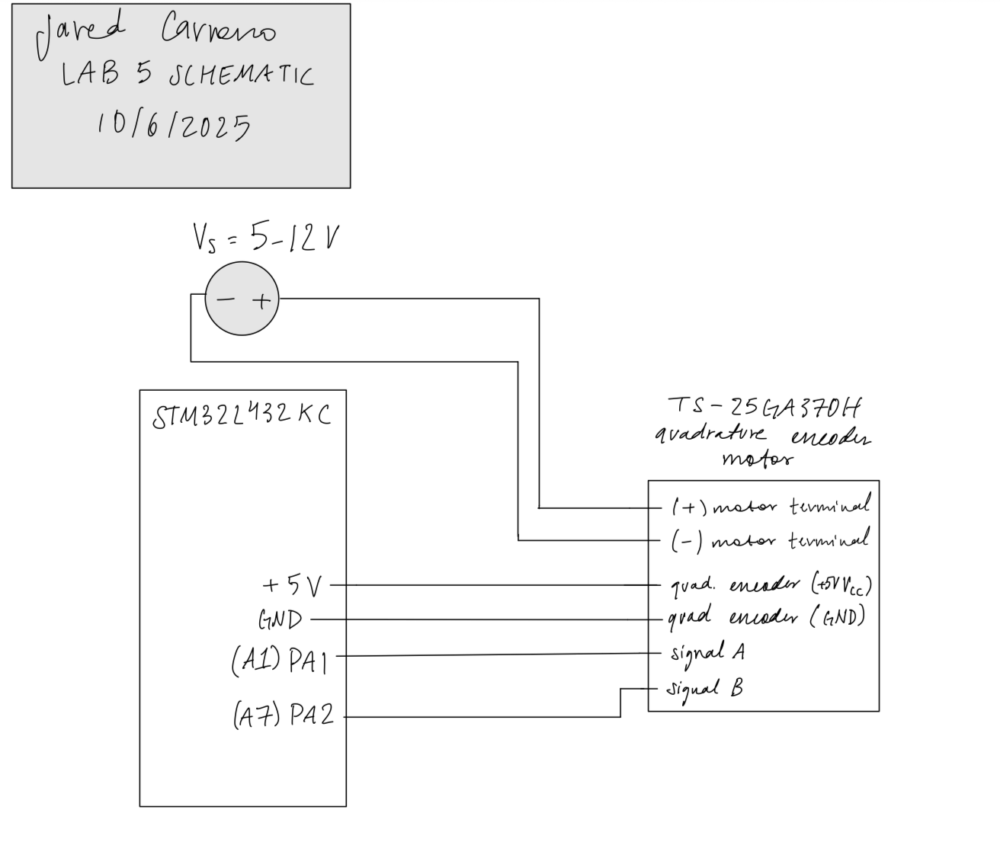

Lab 5
Introduction
In Lab 5, we were tasked with utilizing an STM32L432KC in order to read values of a provided motor’s built-in quadrature encoder in order to determine the speed of the motor (in rev/s). This was done through the use of interrupts that read every rising and falling edge of both of the quad. encoder’s signals, A and B, and correctly handling/interpreting the data being read using an interrupt
Design and Testing Methodology
The overall approach here is simple: enable interrupts for two GPIO input pins and use those interrupts to either increment or decrement a counter depending on the direction and speed.
Interrupts
In this implementation, the EXTI1 and EXTI2 fields within EXTICR1 were set to PA1 and PA2, respectively. Next, interrupts had to be enabled globally using the CMSIS provided _enable_irq() function. Using a mask bit, the IMR1 register was edited to allow for interrupts to be requested by our selected GPIO pins, while the RTSR1 and FTSR1 registers were modified to enable rising and falling edge triggers for the selected GPIO pins, respectively. Within the NVIC ISER register, EXTI interrupts were also enabled for PA1 and PA2.
Within the handlers, there were four cases to consider: rising/falling edges of A, rising/falling edges of B. As seen in Figure 2, when A is leading, the motor is spinning CW, and while B is leading the motor is spinning CCW. Focusing on the rising and falling edges of the leading signal and comparing it to the value of the other signal at the same moment will allow us to calculate the direction of rotation. As seen in Figure 2, the behavior of a motor spinning CW can be described by the two scenarios: A is rising when B is zero, and A falls when B is 1. The other two scenarios come from flipping the signals which will produce the opposite cases, meaning that the motor is spinning CCW. We use these four cases within the interrupt handler in order to determine whether or not to increment or decrement the counter. Using the counter, the velocity is calculated by dividing the counter by 4*PPR (pulses per revolution) provided by the spec. sheet in Figure 1.


Technical Documentation:
The Git repository containing the source code of this lab can be found here: Lab 5 Repo.
Velocity Verification
The measured periods of the traces shown in Figure 3 were utilized to calculate the rev/s directly from the encoder’s output signal. I also recording a video of my motor spinning, calculated how long a single period was and utilized that value to calculate the revolutions per second. Calculations are shown in Figure 5.



Polling v.s. Interrupts
Given that interrupts are inherently faster since there are less processes, we already know that an interrupt-based approach is going to be faster than a polling-based approach. The issue arises in the fact that interrupts are event-driven while polling is time-driven. When an interrupt occurs, your pointer will jump into another address, the code will pause where the interrupt was triggered, and will jump back when it is done handling the interrupt. However, if we are polling every second, then in the time we are reading the values, we will miss a total of 4080 edges, since the code doesn’t pause while you’re reading any data (calculations shown in Figure 6).

Flowchart

Schematic

Results and Discussion
Running my implementation yielded the correct result – a speed close to 2.5 rev/s! The terminal output is shown below. I noticed that there was a large variability when it came to having motors that actually ran at the rated speed of 2.5 rev/s. Most motors I tested ran a little faster (2.67, 2.8, 2.9 rev/s) with only a single one running at 2.5 rev/s.
Terminal Output
counter: 0
The motor is spinning at 0.000000 rev/s
counter: 0
The motor is spinning at 0.000000 rev/s
counter: 0
The motor is spinning at 0.000000 rev/s
counter: 0
The motor is spinning at 0.000000 rev/s
counter: 0
The motor is spinning at 0.000000 rev/s
counter: -3708
The motor is spinning at -2.271446 rev/s
counter: -4371
The motor is spinning at -2.677696 rev/s
counter: -4374
The motor is spinning at -2.678921 rev/s
counter: -4372
The motor is spinning at -2.678309 rev/s
counter: -4374
The motor is spinning at -2.679534 rev/s
counter: -4374
The motor is spinning at -2.680147 rev/s
counter: -4376
The motor is spinning at -2.680760 rev/s
counter: -4376
The motor is spinning at -2.680760 rev/s
counter: -4376
The motor is spinning at -2.680760 rev/s
counter: -4376
The motor is spinning at -2.680760 rev/s
counter: -4376
The motor is spinning at -2.681373 rev/s
counter: -4379
The motor is spinning at -2.682598 rev/s
counter: -4378
The motor is spinning at -2.681985 rev/s
counter: -4378
The motor is spinning at -2.681985 rev/s
counter: -4379
The motor is spinning at -2.682598 rev/s
counter: -3002
The motor is spinning at -1.839461 rev/s
counter: -25
The motor is spinning at -0.015319 rev/s
counter: 0
The motor is spinning at 0.000000 rev/s Conclusion
In conclusion, my implementation was able to successfully read the speed of a motor using its integrated quadrature encoder. This lab was really fun to do, as it demonstrated to me how to properly interface with hardware, as well as read data using a microcontroller’s interrupts. Overall, this lab took roughly 15 hours to complete.
AI Prototype Summary
The code produced by the LLM appears to have a similar approach to my implementation, with a very noticeable difference being the use of UART clock. Even though my implementation uses printf(), it does so without a UART clock, so it’s interesting to see the AI take an approach with something I’ve never used before. After running the code on my setup, I determined that the AI implementation was a working one. Output from the AI implementation is shown below.
// ======================================================================
// ============================================================================
// main.c
// Quadrature encoder using EXTI interrupts + UART printf + direction
// ============================================================================
#include "main.h"
volatile int32_t encoder_count = 0;
volatile int32_t last_encoder_count = 0;
volatile float encoder_velocity = 0.0f;
volatile int8_t encoder_dir = 0; // 1 = CW, -1 = CCW, 0 = stopped
volatile uint32_t print_counter = 0;
// ---------------------------------------------------------------------------
// UART2 initialization and printf redirection
// ---------------------------------------------------------------------------
void UART2_Init(void)
{
// Enable GPIOA and USART2 clocks
RCC->AHB2ENR |= RCC_AHB2ENR_GPIOAEN;
RCC->APB1ENR1 |= RCC_APB1ENR1_USART2EN;
// Configure PA2 (TX) and PA3 (RX) as AF7
GPIOA->MODER &= ~(GPIO_MODER_MODE2_Msk | GPIO_MODER_MODE3_Msk);
GPIOA->MODER |= (0x2 << GPIO_MODER_MODE2_Pos) | (0x2 << GPIO_MODER_MODE3_Pos);
GPIOA->AFR[0] &= ~((0xF << (2 * 4)) | (0xF << (3 * 4)));
GPIOA->AFR[0] |= (7 << (2 * 4)) | (7 << (3 * 4)); // AF7 = USART2
// Configure USART2: 115200 baud, 8N1
USART2->BRR = SystemCoreClock / 115200; // assuming APB1 = SystemCoreClock
USART2->CR1 = USART_CR1_TE | USART_CR1_RE | USART_CR1_UE;
}
// Retarget printf to USART2
int __io_putchar(int ch)
{
while (!(USART2->ISR & USART_ISR_TXE)); // wait for TX buffer empty
USART2->TDR = ch;
return ch;
}
// ---------------------------------------------------------------------------
// Encoder + EXTI setup
// ---------------------------------------------------------------------------
void Encoder_Init(void)
{
RCC->AHB2ENR |= RCC_AHB2ENR_GPIOAEN;
// PA1 and PA2 as input with pull-ups
GPIOA->MODER &= ~(GPIO_MODER_MODE1_Msk | GPIO_MODER_MODE2_Msk);
GPIOA->PUPDR &= ~(GPIO_PUPDR_PUPD1_Msk | GPIO_PUPDR_PUPD2_Msk);
GPIOA->PUPDR |= (1U << GPIO_PUPDR_PUPD1_Pos) | (1U << GPIO_PUPDR_PUPD2_Pos);
RCC->APB2ENR |= RCC_APB2ENR_SYSCFGEN;
// Map EXTI lines to PA1, PA2 (EXTI1, EXTI2)
SYSCFG->EXTICR[0] &= ~(SYSCFG_EXTICR1_EXTI1_Msk | SYSCFG_EXTICR1_EXTI2_Msk);
EXTI->IMR1 |= (EXTI_IMR1_IM1 | EXTI_IMR1_IM2);
EXTI->RTSR1 |= (EXTI_RTSR1_RT1 | EXTI_RTSR1_RT2);
EXTI->FTSR1 |= (EXTI_FTSR1_FT1 | EXTI_FTSR1_FT2);
NVIC_SetPriority(EXTI1_IRQn, 2);
NVIC_EnableIRQ(EXTI1_IRQn);
NVIC_SetPriority(EXTI2_IRQn, 2);
NVIC_EnableIRQ(EXTI2_IRQn);
}
// ---------------------------------------------------------------------------
// TIM2 1 ms periodic interrupt
// ---------------------------------------------------------------------------
void Timer2_Init(void)
{
RCC->APB1ENR1 |= RCC_APB1ENR1_TIM2EN;
DELAY_TIM->PSC = (SystemCoreClock / 1000000) - 1; // 1 MHz tick
DELAY_TIM->ARR = 1000 - 1; // 1 ms overflow
DELAY_TIM->CNT = 0;
DELAY_TIM->DIER |= TIM_DIER_UIE;
DELAY_TIM->CR1 |= TIM_CR1_CEN;
NVIC_SetPriority(TIM2_IRQn, 3);
NVIC_EnableIRQ(TIM2_IRQn);
}
// ---------------------------------------------------------------------------
// Compute velocity (called every 1 ms by TIM2 interrupt)
// ---------------------------------------------------------------------------
void compute_velocity(void)
{
int32_t delta = encoder_count - last_encoder_count;
last_encoder_count = encoder_count;
// Determine direction based on delta sign
if (delta > 0) encoder_dir = 1;
else if (delta < 0) encoder_dir = -1;
else encoder_dir = 0;
// rev/s = delta / (PPR * 4 * 0.001s)
encoder_velocity = (float)delta / (PPR * 4.0f * 0.001f);
}
// ---------------------------------------------------------------------------
// Encoder update helper
// ---------------------------------------------------------------------------
static inline void Encoder_Update(void)
{
uint32_t A = (GPIOA->IDR & (1 << 1)) ? 1 : 0;
uint32_t B = (GPIOA->IDR & (1 << 2)) ? 1 : 0;
if (A == B)
encoder_count++;
else
encoder_count--;
}
// ---------------------------------------------------------------------------
// Interrupt Handlers
// ---------------------------------------------------------------------------
void EXTI1_IRQHandler(void)
{
if (EXTI->PR1 & EXTI_PR1_PIF1)
{
EXTI->PR1 = EXTI_PR1_PIF1;
Encoder_Update();
}
}
void EXTI2_IRQHandler(void)
{
if (EXTI->PR1 & EXTI_PR1_PIF2)
{
EXTI->PR1 = EXTI_PR1_PIF2;
Encoder_Update();
}
}
void TIM2_IRQHandler(void)
{
if (DELAY_TIM->SR & TIM_SR_UIF)
{
DELAY_TIM->SR &= ~TIM_SR_UIF;
compute_velocity();
// Print every 100 ms
print_counter++;
if (print_counter >= 100)
{
print_counter = 0;
if (encoder_dir == 0)
printf("Stopped (0.00 rev/s)\r\n");
else
printf("Speed: %.2f rev/s (%s)\r\n",
encoder_velocity * encoder_dir, // signed speed
(encoder_dir > 0) ? "CW" : "CCW");
}
}
}
// ---------------------------------------------------------------------------
// Main
// ---------------------------------------------------------------------------
int main(void)
{
SystemCoreClockUpdate();
UART2_Init();
Encoder_Init();
Timer2_Init();
printf("\r\nQuadrature Encoder + Direction Test Start\r\n");
while (1)
{
__WFI(); // Sleep until interrupt
}
}Terminal Output
Quadrature Encoder + Direction Test Start
Stopped (0.00 rev/s)
Stopped (0.00 rev/s)
Stopped (0.00 rStopped (0.topped (0.00 rev/s)
Stopped (0.00 rtopped (0.00 rev/s)
0.00Sto0.00 rev/s)
Speed: 0.61 rev/s (peedpeed: 0.61 rev/s (CCW)
Stopped (0.00 repeedpeed: 0.61 rev/s (CCW)
Stopped (0.0peed: 0.61 rev/s (CC(0.00 rev/s)
Stoppe(0.0(0.00 rev/s)
St(0.0d (0d (0.00 rev/s)
Speed: 0.61 rev/s (CW)
Stopd (0.00 rev/s)
Speed: 0.61 rev/s (CW)
Stopd (0.00 rev/s)
Speed: 0.61 rev/s (CW)
Stopd (0S0.00 rev/s)
Speed: 0.61 rev/s (CW)
Sto0.000.00 rev/s)
Speed: 0.00 rev/s)
Speed: 0.61 rev/s (CW)
Stopped (0.00 rev/s)
Speed: 0.61 rev/s (CCW)
Stopped (0.00 rev/s)
Stopped (0.00 rev/s)
Speed: 0.61 rev/s (CW)
Stopped (0.00 rev/s)
Speed: 0.61 rev/s (CCW)
Stopped (0.00 rev/s)
Speed: 0.61 rev/s (CW)
Stopped (0.00 rev/s)
Stopped (0.00 rev/s)
Speed: 0.61 rev/s (CCW)
Stopped (0.00 rev/s)
Speed: 0.61 rev/s (CW)
Stopped (0.00 rev/s)
Speed: 0.61 rev/s (CCW)
Stopped (0.00 rev/s)
Speed: 0.61 rev/s (CW)
Stopped (0.00 rev/s)
Stopped (0.00 rev/s)
Stopped (0.00 rev/s)